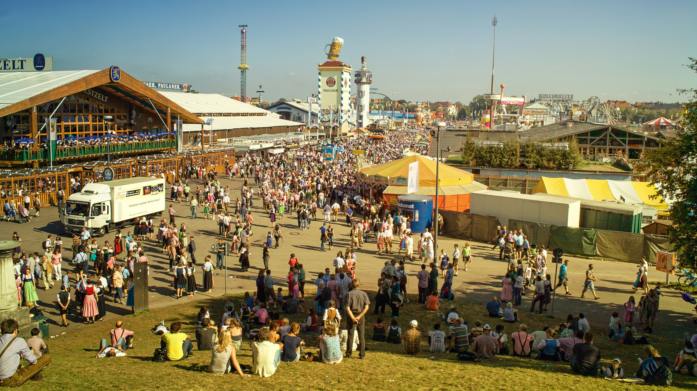

Programa de Actividades
Consulta aquí el programa completo de actividades, charlas y talleres que se celebrarán durante los tres días de la Feria de Viajes 2025.
| Día | Hora | Actividad | Ubicación |
|---|---|---|---|
| Viernes 21 | 10:00 - 11:00 | Inauguración oficial y bienvenida | Auditorio principal |
| Viernes 21 | 12:00 - 13:30 | Taller: Cómo organizar tu primer viaje internacional | Sala 2 |
| Sábado 22 | 11:00 - 12:30 | Charla: Turismo sostenible y responsable | Auditorio principal |
| Sábado 22 | 17:00 - 18:00 | Presentación de nuevos destinos 2026 | Zona expositores |
| Domingo 23 | 10:30 - 11:30 | Concurso de fotografía de viajes | Escenario central |
| Domingo 23 | 13:00 - 14:00 | Clausura y agradecimientos | Auditorio principal |
Recomendaciones para los asistentes:
- Llega con tiempo a las charlas y talleres (aforo limitado).
- Trae tu acreditación visible en todo momento.
- Consulta el mapa del recinto en la zona de información.
- Comparte tus fotos en redes con el hashtag #FeriaViajes2025.
Para más información sobre turismo responsable, visita la web oficial de la OMT (Organización Mundial del Turismo).
